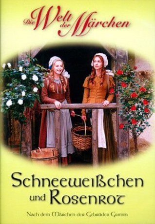

#10421 Schneeweißchen und Rosenrot
 
 IMDB-Wertung: 6.7 / 10
IMDB-Wertung: 6.7 / 10  Metascore: 0
Metascore: 0 
In an enchanted forest, the princely brothers Michael and Andreas get lost and are transformed, by a mountain spirit who jealously guards his underground treasure, into animals until the unlikely event of sincere love from a human. The only persons who may be able to give such love are the local commoner sisters Snowwhite and Rose-red, who are kind and helpful by nature and stand to harvest unimagined rewards.
Jahr: 1979
Dauer: 67 Minuten
FSK: 0
Land: Ost-Deutschland Studio: DEFATonspuren:
Untertitel:
Auflösung: 1080p (1920x1080) Größe: 5560 MB
Genre: Fantasy, Familie
Regisseur: Siegfried Hartmann
Drehbuch: Margot Beichler, Jacob Grimm, Wilhelm Grimm, Siegfried Hartmann
Soundtrack: Peter Gotthardt
Darsteller:
- Julie Juristová als Schneeweißchen
- Pavel Trávnícek als Michael
- Katrin Martin als Rosenrot
- Bodo Wolf als Andreas
- Hans-Peter Minetti als Berggeist
- Johannes Wieke als Matthias
- Annemone Haase als Mutter
- Hajo Mende als Klaus
- Pedro Hebenstreit als Bär
- Helmut Schreiber als Bertram
- Erich Löwel als Dietmar
- Erik S. Klein als König
- Bertl Haller als Bauer (uncredited)
- Arnim Mühlstädt als Bäcker (uncredited)
- Willy Schmitz als Töpfer (uncredited)
- Hannes Stelzer als (uncredited)
Datei: X:\Märchen\Schneeweißchen und Rosenrot (1979, FSK0, 1920x1080).mkv seit 06.01.2019
Festplatte: Kinder-Filme+Trick
 Es gibt insgesamt 61 Filme in der Gruppe 'Märchen'
Es gibt insgesamt 61 Filme in der Gruppe 'Märchen'